🌸 Période
Le Crétacé
De −145 à −66 millions d’années. Les fleurs apparaissent, les dinosaures se diversifient comme jamais… puis une météorite met fin à leur règne.
Que se passait-il ?
Les continents ressemblent de plus en plus à ceux d’aujourd’hui. Séparés par les océans, les dinosaures évoluent différemment sur chaque terre : c’est la période où ils sont les plus variés.
Grande nouveauté : les plantes à fleurs apparaissent ! Avec elles arrivent les abeilles et une multitude d’insectes. Les paysages se colorent enfin.
C’est l’époque des superstars : Tyrannosaurus rex, Triceratops, Vélociraptor, Spinosaurus, Ankylosaurus…
Il y a 66 millions d’années, un astéroïde de 10 kilomètres percute le Mexique. En quelques mois, le ciel s’assombrit, les plantes meurent, et avec elles trois espèces sur quatre. Seuls les oiseaux survivent.
🌍 Le monde à cette époque
| Climat | Doux et chaud, avec des saisons marquées. Pas de glace aux pôles. |
|---|---|
| Végétation | Premières fleurs, magnolias, figuiers, puis les premiers arbres à feuilles larges. |
| Durée | 79 millions d’années |
💡 Le fait marquant
L’astéroïde a laissé un cratère de 180 km de large au Mexique : le cratère de Chicxulub.
Les créatures du Crétacé
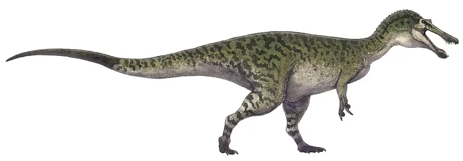
Baryonyx Un pêcheur à griffe géante, cousin du Spinosaure. 🌸 Crétacé 🐟 Piscivore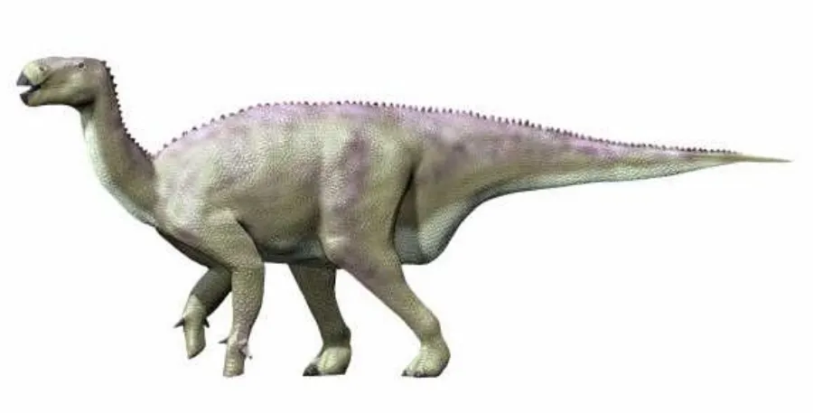
Iguanodon L’un des tout premiers dinosaures découverts… avec un pouce en forme de poignard. 🌸 Crétacé 🌿 Herbivore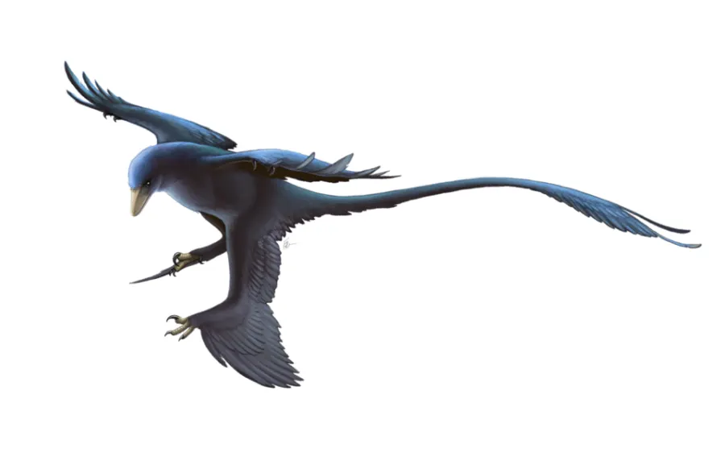
Microraptor Un dinosaure à QUATRE ailes, noir et brillant comme un corbeau. 🌸 Crétacé 🥩 Carnivore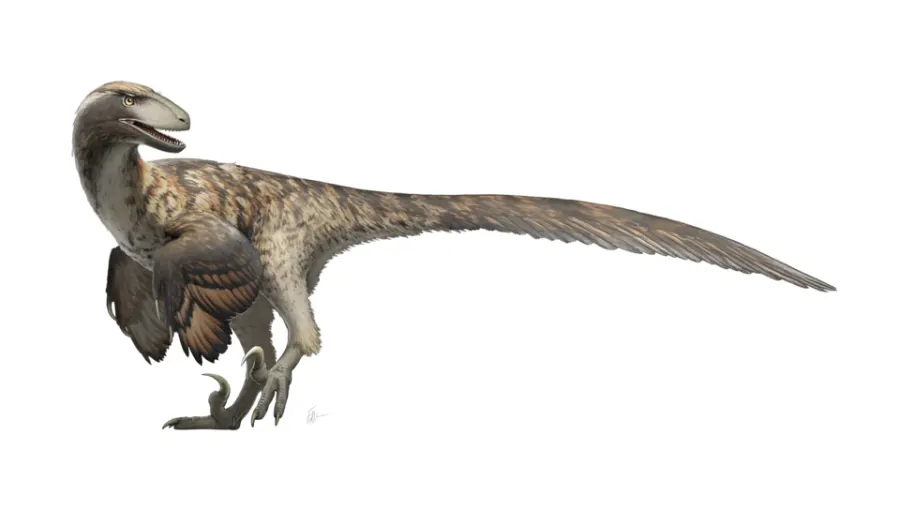
Deinonychus Le raptor qui a changé la façon dont on imagine les dinosaures. 🌸 Crétacé 🥩 Carnivore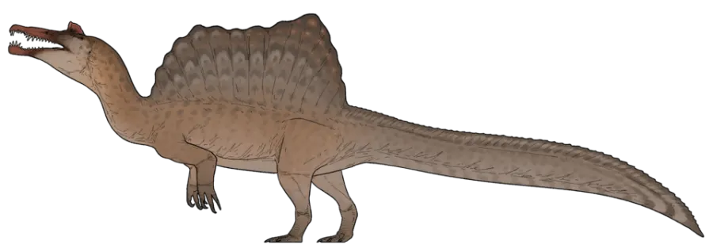
Spinosaurus Le plus grand carnivore terrestre de tous les temps… et il vivait dans l’eau ! 🌸 Crétacé 🐟 Piscivore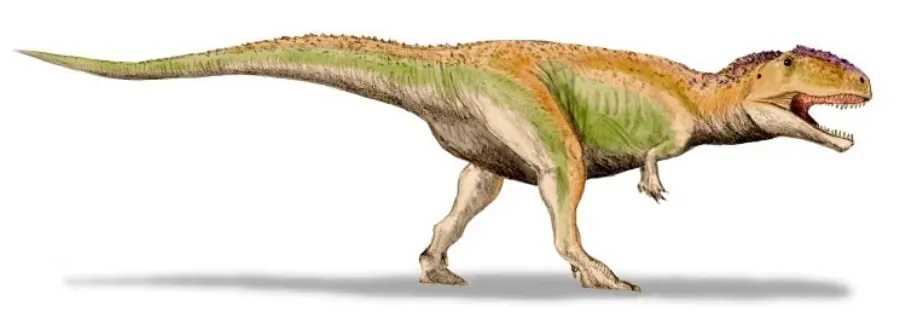
Giganotosaurus Un rival du T-rex, encore plus long, tout au bout du monde. 🌸 Crétacé 🥩 Carnivore Argentinosaurus
Le plus grand animal terrestre de tous les temps : 35 mètres et 70 tonnes !
🌸 Crétacé
🌿 Herbivore
Argentinosaurus
Le plus grand animal terrestre de tous les temps : 35 mètres et 70 tonnes !
🌸 Crétacé
🌿 Herbivore
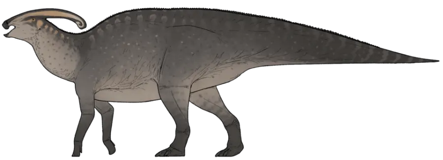
Parasaurolophus Le trombone des dinosaures : sa crête servait de trompette ! 🌸 Crétacé 🌿 Herbivore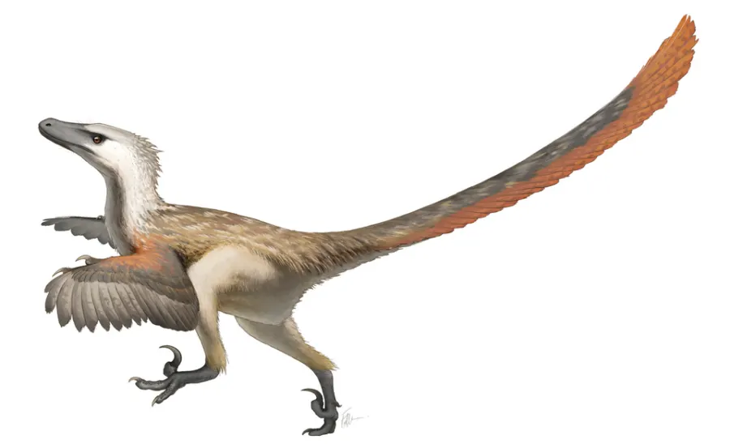
Velociraptor Attention : le vrai Vélociraptor avait la taille d’un dindon… et des plumes ! 🌸 Crétacé 🥩 Carnivore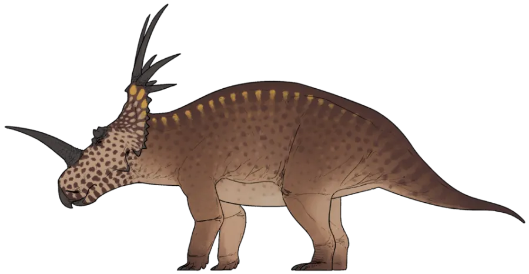
Styracosaurus Une couronne de six grandes pointes autour de la tête : un vrai soleil vivant. 🌸 Crétacé 🌿 Herbivore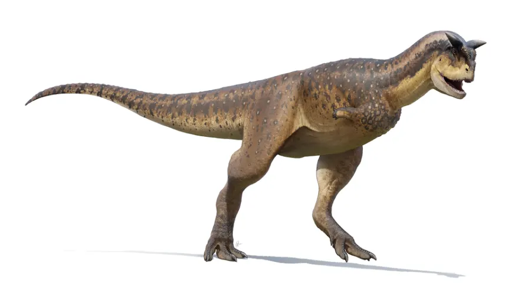
Carnotaurus Deux cornes de taureau, des bras ridicules… et une vitesse folle ! 🌸 Crétacé 🥩 Carnivore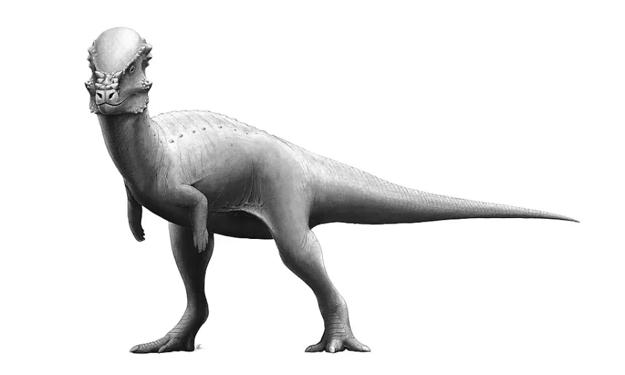
Pachycephalosaurus Un casque en os de 25 cm d’épaisseur sur le crâne ! 🌸 Crétacé 🌿 Herbivore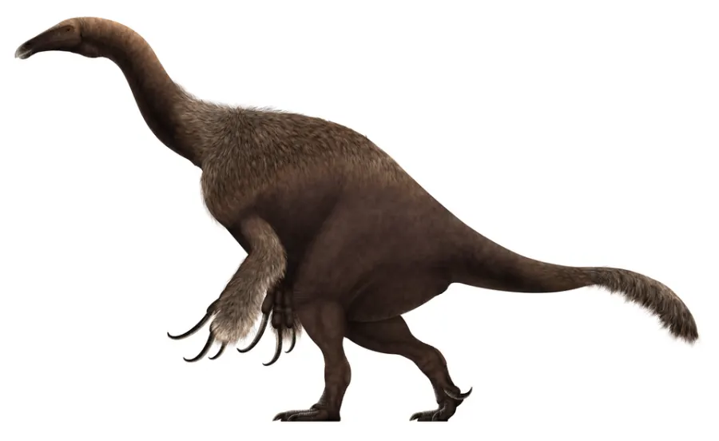
Therizinosaurus Les plus longues griffes de toute l’histoire : un mètre de long ! 🌸 Crétacé 🌿 Herbivore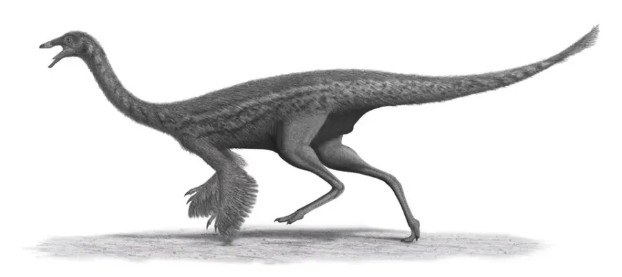
Gallimimus L’autruche préhistorique : le sprinteur du monde des dinosaures. 🌸 Crétacé 🍽️ Omnivore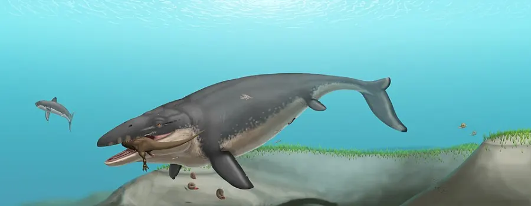
Mosasaurus Le monstre des mers du Crétacé. (Et non, ce n’est pas un dinosaure !) 🌸 Crétacé 🥩 Carnivore ⚠️ Pas un dinosaure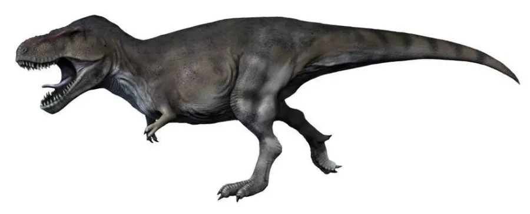
Tyrannosaurus rex Le plus célèbre de tous : 12 mètres, 8 tonnes et la morsure la plus puissante de l’histoire. 🌸 Crétacé 🥩 Carnivore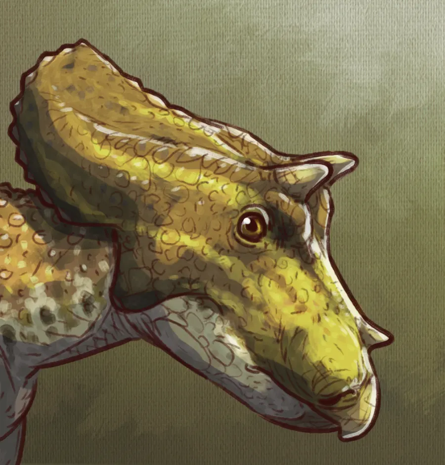
Triceratops Trois cornes, une collerette géante et un caractère bien trempé. 🌸 Crétacé 🌿 Herbivore Ankylosaurus
Un char d’assaut vivant, avec une massue au bout de la queue.
🌸 Crétacé
🌿 Herbivore
Ankylosaurus
Un char d’assaut vivant, avec une massue au bout de la queue.
🌸 Crétacé
🌿 Herbivore
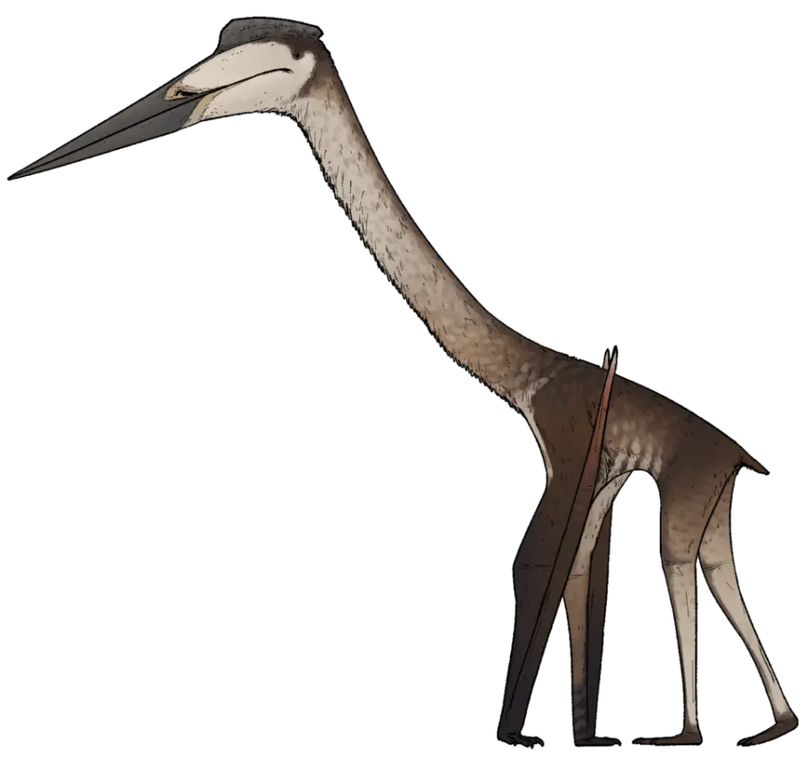
Quetzalcoatlus Une envergure de 11 mètres : le plus grand animal volant de tous les temps. (Pas un dinosaure !) 🌸 Crétacé 🥩 Carnivore ⚠️ Pas un dinosaure